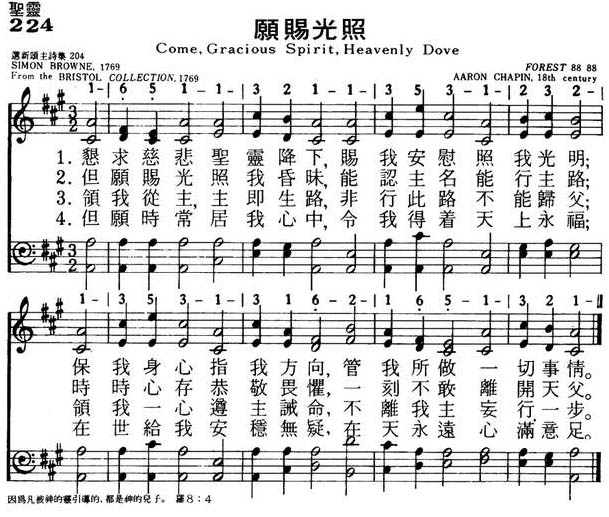

|
|
|
|
1 Come, gracious Spirit, heav’nly Dove, 2 Lead us to Christ, the living Way, 3 Lead us to heav’n, that we may share |
224愿赐光照
1.恳求慈悲圣灵降下，赐我安慰照我光明；
保我身心指我方向，管我所作一切事情。 2.但愿赐光照我昏昧，能认主名能行主路； 时时心存谦恭敬畏，一刻不敢离开天父。 3.领我从主，主即生路，非行此路不能归父； 领我一心遵主诫命，不离我主妄行一步。 4.但愿时常居我心中，令我得着天上永福； 在世给我安稳无疑，在天永远心满意足。 |
|
https://www.mred365.cn/szxg/7227.html  https://hymnary.org/tune/forest_16511  |
|
|
|
|

LX1331
Come, Gracious Spirit,
Heavenly Dove
224愿赐光照
| Text: | Come, gracious Spirit, heavenly Dove |
| Author: | Rev. Simon Browne |
| Tune: | HOLLEY |
| Composer: | George Hews |
| Short Name: | Simon Browne |
| Full Name: | Browne, Simon, 1680-1732 |
| Birth Year: | 1680 |
| Death Year: | 1732 |
Simon Browne was born at
Shepton Mallet, Somersetshire, about 1680. He began to preach as an
"Independent" before he was twenty years of age, and was soon after settled
at Portsmouth. In 1716, he became pastor in London. In 1723, he met with
some misfortunes, which preyed upon his mind, and produced that singular
case of monomania, recorded in the text-books of Mental Philosophy; he
thought that God had "annihilated in him the thinking substance, and utterly
divested him of consciousness." "Notwithstanding," says Toplady, "instead of
having no soul, he wrote, reasoned, and prayed as if he had two." He died in
1732. His publications number twenty-three, of which some are still in
repute.
--Annotations of the Hymnal, Charles Hutchins, M.A., 1872.
Notes
Come, Holy
Spirit, Heavenly Dove, My sinful maladies remove. S.. Browne. [Whitsuntide.]
Few hymns in the English language have been subjected to so many
alterations and changes as this, which according to the author's title,
concerns "The Soul giving itself up to the Conduct and Influence of the
Holy Spirit." An enumeration of all these changes would tend to increase
rather than to lessen the complications which surround the various texts
in modern hymnals. The most that can be done will be to give tho
original text, and then to indicate the sources of the important changes
in common use:
1. The hymn appeared in S. Browne's Hymns & Spiritual
Songs, 1720, Bk. i., No. 131, pp. 173,174, in 7 stanzas of 4 lines,
as follows:—
"Come, Holy Spirit, heav'nly Dove,
My sinful maladies remove;
Be Thou my light, be Thou my guide,
O'er every thought and step preside."The light of truth to me display,
That I may know and chuse my way;
Plant holy fear within mine heart,
That I from God may ne'er depart.“Conduct me safe, conduct me far
From every sin and hurtful snare;
Lead me to God, my final rest,
In His enjoyment to be blest."Lead me to Christ, the living way,
Nor let me from his pastures stray;
Lead me to heav'n, the seat of bliss,
Where pleasure in perfection is."Lead me to holiness, the road
That I must take to dwell with God;
Lead to Thy word, that rules must give,
And sure directions how to live."Lead me to means of grace, where I
May own my wants, and seek supply;
Lead to Thyself, the spring from whence
To fetch all quick'ning influence."Thus I, conducted still by Thee,
Of God a child beloved shall be;
Here to His family pertain,
Hereafter with Him ever reign."
2. In 1769 Ash and Evans published in their Bristol Collection, as No. 161, the following version:
"Come, Holy Spirit, heavenly Dove,
With light and comfort from, above;
Be Thou our Guardian, Thou our Guide,
O'er every Thought and Step preside."Conduct us safe, conduct us far
From every Sin and hurtful Snare;
Lead to Thy Word that Rules must give,
And teach us Lessons how to live."The Light of Truth to us display,
And make us know and choose Thy Way;
Plant holy Fear in every Heart,
That we from God may ne'er depart."Lead us to Holiness, the Road,
That we must take to dwell with God;
Lead us to Christ, the living Way,
Nor let us from His pastures stray."Lead us to God, our final Rest,
In His enjoyment to be bless'd;
Lead us to Heaven, the Seat of Bliss,
Where Pleasure in Perfection is. B."
3. This version was
included in Toplady's Psalms & Hymns, 2nd ed.,
edited by Walter Row, 1787, No. 395, with the following alterations:
Stanza i., l. 1, "Come gracious Spirit, heavenly Dove," Stanza ii., 1.
3, Lead to Thy word; for that must give.
This version was again repeated with minor changes, including "precepts"
for "pastures," in Cotterill’s Selection, 1819,
and others.
4. The next change of importance came with Hall's Mitre,
1836, No. 79, in which the last stanza reads:—
“Lead us to God, our only rest,
To be with Him for ever blest;
Lead us to heaven that we may share,
Fulness of joy for ever there."
5. In Mercer, 1864, this verse is transposed as:—
"Lead us to heaven, that we may share
Fulness of joy for ever there;
Lead us to God, our final rest,
To be with Him for ever blest."
6. On comparing the texts of modern collections with these details we find that (1) the original is represented in Lord Selborne's Book of Praise Hymnal, 1867; and Dr. Hatfield's Church Hymn Book, N. Y., 1872; (2) the Ash & Evans text as in tho Baptist Psalms & Hymns, 1858-80, with "gracious" for "holy"; (3) the interwoven text of Browne, Ash & Evans, Toplady, and Hall, as in the Hymnal Companion, with "final rest" for "only rest;" (4) the Browne, Ash & Evans, Toplady, Cotterill, and Mercer text, Oxford ed. of Mercer, No. 228; and, through the same source, the Hymnary, 1872, and Hymns Ancient & Modern, 1875, &c. The American collections follow in the same tracks, and are generally reproductions of the English text. Two centos remain to be noticed, that in Thring's Collection, 1882, where stanza vi. of the original is rewritten by the editor, and the arrangement, "Come gracious Spirit, gift of love," which is found in the Sunday School Union Hymn Book, and other collections for children.
--John Julian, Dictionary of Hymnology (1907)
| Short Name: | Aaron Chapin |
| Full Name: | Chapin, Aaron, 1768-? |
| Birth Year: | 1768 |
Hymn History-Come, Gracious Spirit, Heavenly Dove
Simon Browne (1680-1732) Hymn writer Simon Browne was much better at putting things on paper than trying to express them verbally. He was very talented and wrote an English dictionary, a commentary of Matthew Henry after the great scholar died and also authored many beautiful hymns. Throughout his life however he did struggle with one painful memory. When Browne was forty-years-old he was attacked by a highway man and in self-defense, Browne accidentally killed him. Even though he was defending his life, Browne suffered enormous guilt from this act and never felt forgiven. He wrote this hymn seeking the comfort and assurance he needed from the Holy Spirit to find peace in his heart. No one is certain if Browne ever truly found that peace, but we are certain that even if he could not forgive himself, God was more than able to forgive him.
comeforhim.org